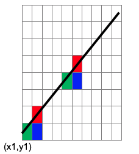

-
Bresenham’s Line drawing algorithm is an accurate, efficient raster line drawing algorithm, that scan converts line using only incremental integer calculations.
-
Let us consider the starting point (x1, y1) of a given gentle slope line, we step to each successive column (x direction) and plot the pixel whose scan-line ‘y’ value closest to the actual line path.

-
Now if we consider the next point to be plotted with respect to the point(x1,y1) we may select the point as either (x1+1,y1) or (x1+1,y1+1) as shown in figure 1.
• For the selection of the next point Bresenham algorithm uses the decision parameter, to decide whether which point is closer to the actual line segment.
-
Algorithm considers the vertical distances between the specified point (x1+1, y1) and (x1+1, y1+1) with respect to the line segment.
-
As it is observed that for the gentle slope line we will be having more points on X direction, so we have to always increment in X-direction respectively.
-
With the increment in X direction, the decision parameter will decide the increment in y direction as either (0/1) for the gentle slope line.
-
Bresenham algorithm can work efficiently and provides more end point accuracy for the gentle slope lines as well as sharp slope lines.